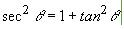
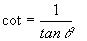

Objetivos:
- Que apliques los conocimientos sobre funciones y procedimientos,
para experimentar las ventajas de la programación modular, como la
reutilización de código
- Que ejercites la habilidad de hacer frente a los mensajes de error
que envía la herramienta de desarrollo
- Que desarrolles habilidades de sociabilización mediante
el proceso de trabajo en equipo
- Que ayudes a tus compañeros a encontrar la mejor solución
a los programas

Forma de
trabajo:
Actividad en equipos colaborativos e individual

Tiempo
estimado:
90 minutos

Instrucciones:
- Intégrate con tu equipo colaborativo y sigue las indicaciones
del profesor.
- Junto con tus compañeros de equipo, analiza cada uno de
los ejercicios que se presentan a continuación. Identifiquen, en
equipo, cual sería el algoritmo para la solución de cada
uno de los ejercicios. Recuerden documentarlos en sus hojas membretadas.
- De manera individual escribe un programa en C para cada uno de
los ejercicios. Recuerda basarte en el algoritmo que se generó
en el equipo.
- Una vez que hayas terminado tu programa, es tu responsabilidad
ayudar a tus compañeros de equipo a que terminen su programa.
- Entrega, vía la plataforma, los archivos *.c que
contengan los programas en C.
Utiliza el siguiente esquema como apoyo para desarrollar tu laboratorio:

Ejercicio
1.
Implementa
las siguientes funciones, recuerda que las funciones y procedimientos
se definen antes de la codificación del main().
- La función
kilometrosMillas que convierta
la cantidad dada en kilómetros a millas. Equivalencia 1 milla = 1.6 km.
El encabezado
de la función, podría ser el siguiente:
float kilometrosMillas
(float km)
{
}
- La función
millasKilometros que convierta
la cantidad dada en millas a kilómetros.
El encabezado
de la función, podría ser el siguiente:
float millasKilometros
(float millas)
{
}
- El procedimiento unidadesLongitud, que despliegue el siguiente menú en pantalla:
.
- En la sección del "main()" construya un programa
completo en C que utilice el procedimiento unidadesLongitud para
desplegar el menú correspondiente y de acuerdo a la opción
seleccionada por el usuario utiliza la función apropiada de las
implementadas anteriormente, para calcular la equivalencias de las unidades
de longitud. Utiliza el estatuto de control
Switch.
- Recuerda que la captura de datos y validación de valores
debe ser realizada en la sección del "main ( )", pues las
funciones NO pueden realizar las tareas de validación o captura
de datos.
- Guardar esta sección con el nombre: D1_Matricula.c
Ejercicio 2.
En otro archivo, implemente las
siguientes funciones:
- La función gradosRadianes, que recibe una cantidad en grados y regresa su equivalencia
en radianes.
.

.
El encabezado de la función, podría ser el siguiente:
float gradosRadianes (float grados)
{
}
- La función secanteCuadrada, que recibe un ángulo en grados y regresa la secante
cuadrada de dicho ángulo.

El encabezado de la función, podría ser el siguiente:
float secanteCuadrada (float grados)
{
}
Utiliza la función tan(x) de la librería
math.h, que calcula la tangente del ángulo x especificado
en radianes, por lo tanto, para poder usar esta función, es necesario
primero transformar el ángulo en grados a radianes, para ello utiliza
la función gradosRadianes implementada anteriormente. Como
puedes ver, es posible utilizar una función dentro de otra función.
La única condición que demanda el compilador, es que la función
a utilizar dentro, haya sido definida anteriormente.
- La función cotangente, que recibe un ángulo en grados y regresa la cotangente
de dicho ángulo.
..

El encabezado de la función, podría ser el siguiente:
float cotangente (float grados)
{
}
Utiliza la función tan(x) de la librería
math.h, que calcula la tangente del ángulo x especificado
en radianes, por lo tanto para poder usar esta función, es necesario
primero transformar el ángulo en grados a radianes como en la función
anterior.
- El procedimiento identidades, que despliegue el siguiente menú en pantalla:
IDENTIDADES TRIGONOMETRICAS
1. Secante
2. Cotangente
3. Salir
- En la sección del "main()" construya un programa
completo en C que utilice el procedimiento identidades y de acuerdo
a la opción seleccionada por el usuario utilice la función
apropiada de las implementadas anteriormente, para calcular la identidad
trigonométrica elegida. Utiliza el estatuto de control Switch.
- Guardar esta sección con el nombre: D2_Matricula.c

Forma de
entrega:
- Envía tu laboratorio por blackboard, no se aceptarán
laboratorios por ningún otro medio.
- Envía solo tus archivos *.c.
- Los laboratorios enviados posteriormente a la fecha límite
NO SERÁN CALIFICADOS.
.
INSTRUCCIONES PARA ENVIAR TU LABORATORIO
POR BLACKBOARD
- Haz clic en la actividad de Entrega de Laboratorio.
- Escribe comentarios si lo consideras necesario.
- Da clic en el botón de Browse My Computer y localiza
el archivo *.c. Si necesitas agregar más archivos repite
este proceso hasta agregar todos tus archivos.
- Haz clic en Submit.
- Al indicar que ha subido exitosamente hacer clic en OK.
. |